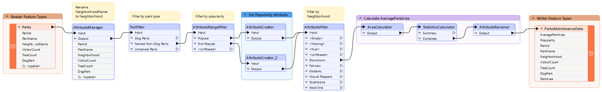
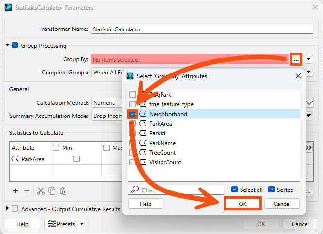
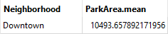
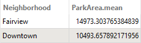

Learning Objectives
After completing this lesson, you’ll be able to:
- Explain how the Group By parameter lets you process features in groups.
- Explain the difference between the Process at End and Process When Group Changes Group By modes.
- Use the Group By parameter in an FME transformer.
Resources
- Starting workspace
- C:\FMEData\Workspaces\TransformAttributes\process-data-in-groups.fmw
- Complete workspace
- C:\FMEData\Workspaces\TransformAttributes\process-data-in-groups-complete.fmw
- Parks.zip (MapInfo TAB)
- C:\FMEData\Data\Parks\Parks.tab
What is Group By?
Group By parameters allow features to be processed in groups by a single FME transformer.
FME transformers perform transformations on either one feature at a time or a whole set of features at once.
- For example, the AreaCalculator transformer operates on one feature at a time (to measure the area of a single polygon feature). We call it a feature-based transformer.
- The StatisticsCalculator operates on multiple features simultaneously (to calculate an average value for them all). In FME, we call this set of features a group and the transformer a group-based transformer.
Creating Groups
A group is a defined set of features processed by a transformer. By default, group-based transformers treat all the features they receive as a single group.
However, such transformers also have a Group By parameter. This parameter lets the user define several groups based on an attribute's value.

To illustrate groups, let's consider calculating the mean age of FME users. The default group for the calculation includes all FME users.
But you could instead divide everyone by their nationality and calculate the average age per country.
This is the same as having a nationality attribute in a dataset and selecting that in an FME Group By parameter.
Here, a Dissolver transformer is used to dissolve (merge) several polygon features. The selected Group By attribute is ViewDescription. Additionally, you can set Complete Groups to When All Features Received, which makes the Dissolver a blocking transformer, or to When Group Changes (Advanced). The latter option should only be used when your data is sorted by the value(s) of the grouping attribute(s). It can offer a performance boost if your data is already sorted or if you are processing many records.

FME creates a series of groups for overlaying, where the features in each group share the same value for the ViewDescription attribute. The practical outcome is that polygon dissolving takes place only where line features share the same description:

Group By Mode
When grouping features, the transformer can handle the group in two different ways. The first way is to hold all of the features until all of the features have come through the transformer; this is referred to as blocking. This is set using the Process at End (Blocking) Group By Mode.
The other way is to pre-sort your data into groups using a transformer like the Sorter. Then, once your data is grouped, use the Process When Group Changes (Advanced) Group By Mode. This mode will push the features through the transformer after each group, which will help speed up performance. Only use this option when your data is pre-sorted.
Exercise
Sven continues to work with the city park data. He's been asked to add the average size of parks in each neighborhood. To do this, he can use the Group By parameter with an existing workspace.
1) Start FME Workbench
Sven starts FME Workbench (2025.0.1 or later) and opens the starting workspace (C:\FMEData\Workspaces\TransformAttributes\process-data-in-groups.fmw). This workspace calculates the average area of parks in the Downtown neighborhood using the StatisticsCalculator.

He views the average area by running the workspace and inspecting the AttributeRenamer's Output port. AverageParkArea is 10,494 m² for the Downtown neighborhood:

Remember that you can view the units for area or length calculations by checking the coordinate system of your data using the Feature Information Window. See Connect to Data for more details.
2) Set Group By in the StatisticsCalculator
Now he'd like to change the workspace to calculate the park area by neighborhood. He views the parameters for the StatisticsCalculator transformer. He checks Group Processing and clicks the '...' button beside the Group By parameter. He selects the attribute called Neighborhood:

He clicks OK/Apply to apply the changes to the transformer.
Older versions of FME had a Cumulative output port for the StatisticsCalculator. If you wish to calculate a cumulative or running statistic that is updated for each feature, check Advanced—Output Cumulative Results. This method can be helpful to determine when a cumulative sum, count, or mean surpasses a particular threshold value. In that case, you would need to combine the output of the StatisticsCalculator Cumulative port with a filtering transformer like a Tester.
3) Run the Workspace
He clicks on the StatisticsCalculator and then clicks on Run To This. He inspects the Summary output port in Visual Preview, which creates a summarized table of the statistics he is calculating.
This table displays the value of ParkArea.mean for each neighborhood. However, because there is only one neighborhood included in the dataset after the AttributeFilter, Sven sees that there is only one feature in the Summary table:

4) Add Another Neighborhood
Sven decides to include the Fairview neighborhood in the written data as well. He connects the Fairview output port on the AttributeFilter to the AreaCalculator.
He uses Run To This on the StatisticsCalculator again, and now the Summary port shows the average park area for both neighborhoods:
